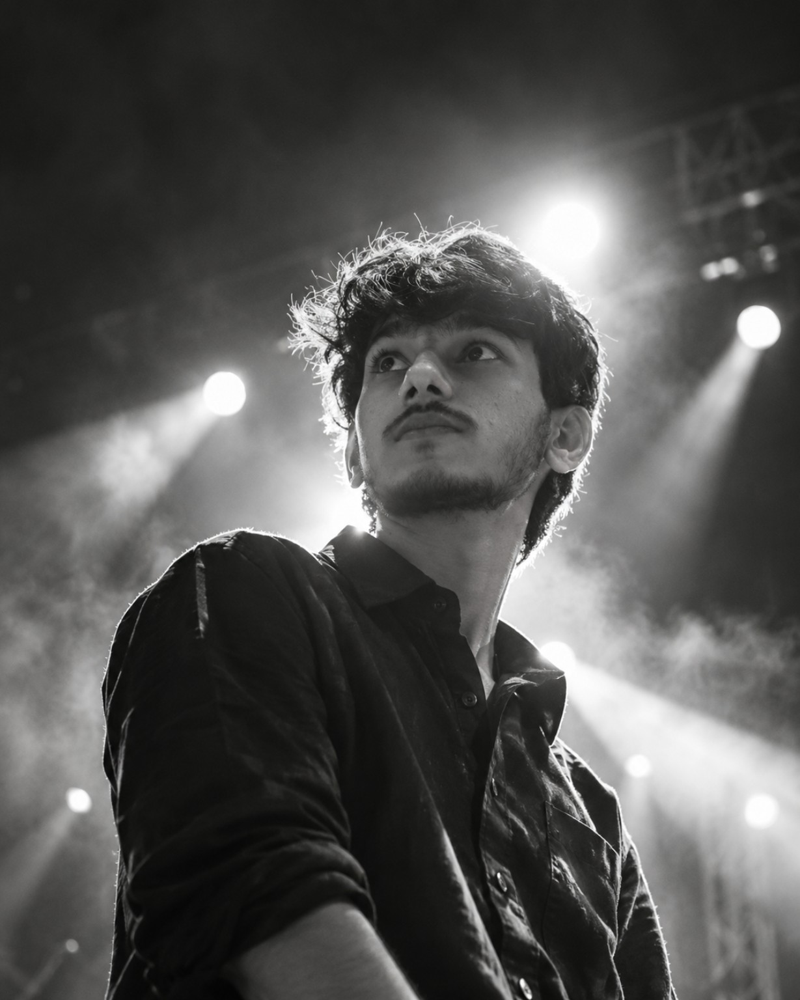

VISUAL THINKING. DISTINCTIVE DESIGN.
Ideas made
visible.
I’m Abhay — a multidisciplinary designer shaping clear, characterful visual identities and digital experiences. I turn thoughtful strategy into design people remember.

FIG. 01 — THE DESIGNERCREATIVE
STUDIO
01 / SELECTED EXPLORATIONS
Work that makes
a mark.
A range of visual challenges, from the first sketch to the final pixel. These are concept explorations and portfolio demonstrations.
Note: The projects above are original concept demonstrations created for this portfolio layout. Replace them with your own client work and case-study results before presenting them as commissioned projects.
02 / WHAT I CAN CREATE
One eye.
Many disciplines.
A connected design toolkit to help a brand look, sound and feel like itself — wherever people meet it.
Brand identity & strategy
Logo design, brand systems, visual language, guidelines, naming exploration and art direction.
Digital & UI design
Websites, landing pages, app interfaces, wireframes, design systems and responsive layouts.
Social & advertising
Instagram posts, carousels, stories, reels covers, ad creatives and campaign toolkits.
Print & editorial
Posters, brochures, flyers, business cards, menus, reports, magazines and presentations.
Packaging & merchandise
Labels, cartons, product packaging, mockups, stationery and branded merchandise.
Illustration & iconography
Custom illustrations, icon sets, visual assets, infographics and data-led storytelling.
Motion & video graphics
Kinetic typography, animated logos, transitions, title cards and short-form visual content.
Photo & image direction
Photo selection, retouching direction, compositing, colour grading and campaign imagery.
03 / THE PERSON BEHIND THE PIXELS
INTENTIONAL BY DESIGN.
Design is not
decoration. It’s communication.
I’m Abhay Vishwakarma, a designer interested in the space where clarity meets character.
I enjoy exploring how typography, colour, composition and systems can turn an idea into a visual experience. My approach is curious and detail-driven: understand the problem, find the visual story, then make every element earn its place.
This portfolio is a growing collection of explorations across identity, digital, campaigns and print. I’m always open to learning, collaborating and taking on thoughtful creative challenges.
Have a project in mind? ↗04 / HOW I APPROACH THE WORK
Good work
has a method.
A flexible process that keeps the work thoughtful, collaborative and moving in the right direction.
Discover
Understand the brief, audience, context and what success should look like.
Explore
Research references, develop concepts and find the strongest visual direction.
Design
Build the system, refine details and test it across real-world applications.
Deliver
Prepare polished assets, organised files and clear handoff documentation.
05 / YOUR TURN
Have a good
idea? Let’s make it real.
Tell me what you’re building, what you need, or just say hello. I’d love to hear about it.
hello@abhaydesigns.in ↗